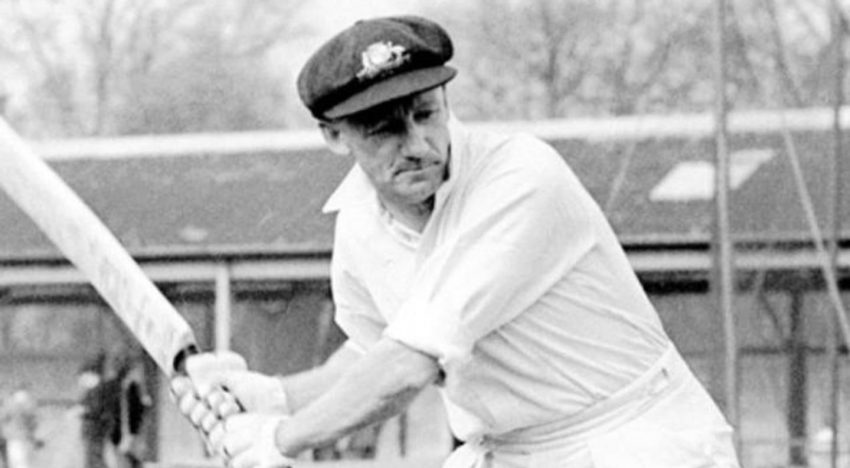
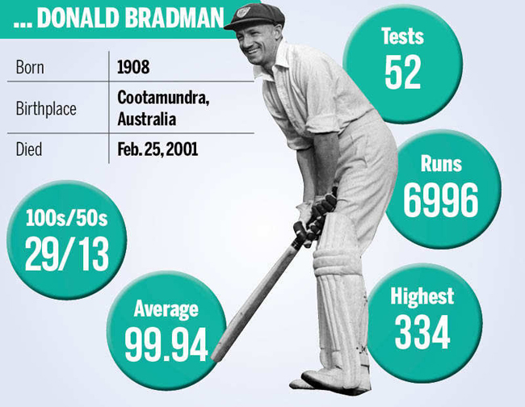

"The Don"-the greatest batsman
Sir Donald George Bradman, AC (27 August 1908 – 25 February 2001), nicknamed "The Don", was an Australian international cricketer, widely acknowledged as the greatest batsman of all time. Bradman's career Test batting average of 99.94 has been cited as the greatest achievement by any sportsman in any major sport.

Sir Don Bradman was the greatest batter of all time that has no doubt but this man started his training just with a stump, golf ball and a tank stand.That’s right. In his old family home, Bradman would toss a golf ball against a corrugated tank stand, allowing it to reach him quickly and at unexpected angles, thereby developing quick reflexes by hitting them right back at the tank and in the process, developing a typical bottom-handed driving technique and getting more efficient with time. This training has gifted the greatest batsman of the whole cricker history.
Sir Don made his test debut against England at Exhibition Groud in Nov 30,1928. He had and average of 99.94 which is trully a surprising figure. But this batter played his last test again against England at Kennington Oval in Aug 14, 1948 but he made a duck n that matach which was a sad thing for his fans.

But this man was surely the greatest batter of all time. He will always be remembered by cricket lovers.